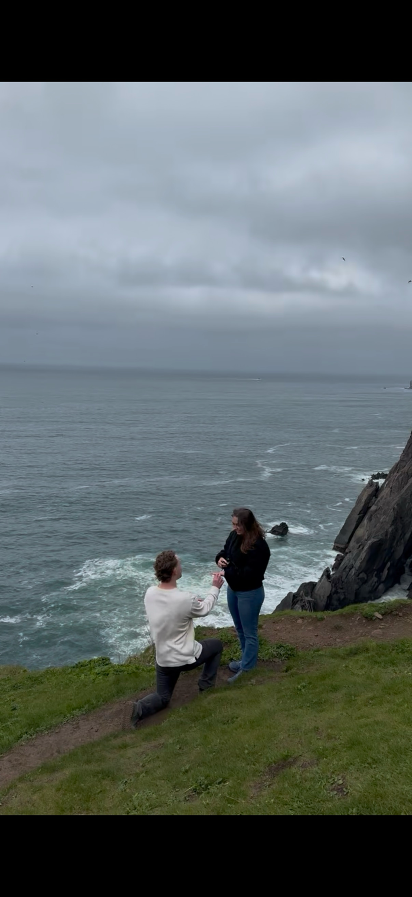

We met as friends at a music festival at the Gorge Amphitheatre in the summer of 2018. Travis was traveling in from Dallas, and Diamond was living in Portland. We stayed in touch as friends for two years, bonding over long conversations and a shared sense of humor, plus a love of music, the outdoors, and good food.
Our first real date came in December of 2019, when Travis flew out to visit Diamond in Portland for the first time. We grabbed banh mi at Golden Dragon in Southeast Portland, and that same weekend we went skiing together. The rest is history. From there, we started a long distance relationship, staying close across the miles until COVID hit and Travis finished grad school, both pushing him to look for work closer to Portland so we could finally build a life together in the same place.
Since then, we've made Portland home, filled our years with camping trips, and traveled together to new countries. Along the way we've learned we make a pretty great team, and we've built our life around adventure, good food, and each other.
The proposal happened on the Oregon coast, where Travis planned a weekend with friends and family that ended in a seafood boil. And, of course, the answer was yes.
Now we can't wait to gather everyone we love in Powell Butte, Oregon, to celebrate this next chapter and make even more memories with all of you. Thank you for being part of our story.
← Back to home